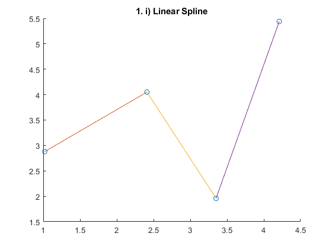
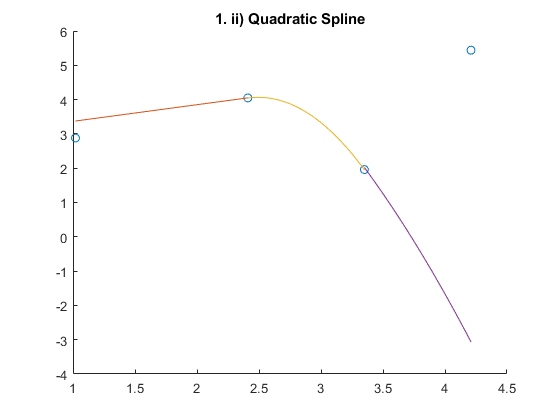
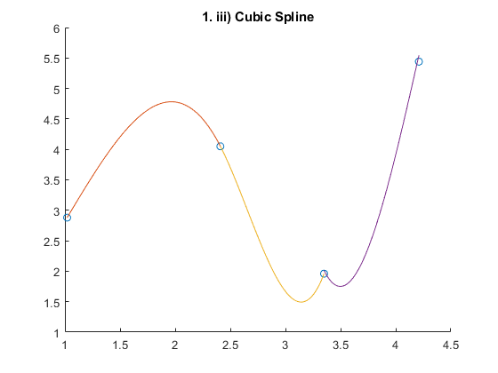
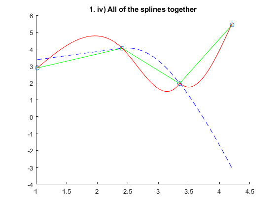

Contents
clear;
clc;
x_data = [1.02 2.41 3.35 4.21];
y_data = [2.88 4.05 1.96 5.44];
1. i)
figure("Name", "Linear Spline")
scatter(x_data, y_data)
hold on
x1 = 1.02 : 0.01 : 2.41;
linearSpline1 = 0.841895756 * x1 + 2.021220159;
plot(x1, linearSpline1)
x2 = 2.41 : 0.01 : 3.35;
linearSpline2 = -2.223979897 * x2 + 9.410652921;
plot(x2, linearSpline2)
x3 = 3.35 : 0.01 : 4.21;
linearSpline3 = 4.046388127 * x3 - 11.59560512;
plot(x3, linearSpline3)
title("1. i) Linear Spline")
hold off

1. ii)
figure("Name", "Quadratic Spline")
scatter(x_data, y_data)
hold on
quadSpline1 = 0.4855 * x1 + 2.8805;
plot(x1, quadSpline1)
quadSpline2 = -2.8818 * x2.^2 + 14.3737 * x2 - 13.8577;
plot(x2, quadSpline2)
quadSpline3 = -1.1622 * x3.^2 + 2.872 * x3 + 5.44;
plot(x3, quadSpline3)
title("1. ii) Quadratic Spline")
hold off

1. iii)
figure("Name", "Cubic Spline")
scatter(x_data, y_data)
hold on
cubicSpline1 = -1.12656 * x1.^3 + 3.44727 * x1.^2 - 0.497864 * x1 + 0.996795;
plot(x1, cubicSpline1)
cubicSpline2 = 6.45367 * x2.^3 -51.3578 * x2.^2 + 131.58354 * x2 - 105.1114;
plot(x2, cubicSpline2)
cubicSpline3 = -5.2318 * x3.^3 + 66.095 * x3.^2 - 270.343 * x3 + 362.601;
plot(x3, cubicSpline3)
title("1. iii) Cubic Spline")
hold off

ALL AT ONCE
figure("Name", "ALL AT ONCE")
scatter(x_data, y_data)
hold on
plot(x1, linearSpline1, "g", x2, linearSpline2, "g", x3, linearSpline3, "g", "DisplayName", "Linear Spline")
plot(x1, quadSpline1, "b--", x2, quadSpline2, "b--", x3, quadSpline3, "b--", "DisplayName", "Quadratic Spline")
plot(x1, cubicSpline1, "r", x2, cubicSpline2, "r", x3, cubicSpline3, "r", "DisplayName", "Cubic Spline")
title("1. iv) All of the splines together")
hold off

2. a. ii) Trapezoidal Rule
syms x
a = 2;
b = 6;
n = [0;0;0;0;0;0;0;0;0;0];
I_n = [0;0;0;0;0;0;0;0;0;0];
Error = [0;0;0;0;0;0;0;0;0;0];
I_exact = 435.81767401;
for k = 1 : 10
m = 2.^k;
f1 = x.^4 * cos(x) - 2;
f = inline(f1);
h = (b - a)/(m - 1);
X = f(a)+f(b);
summation = 0;
for i = 1:m-1
xi=a+(i*h);
summation=summation+f(xi);
end
I = (h/2)*(X+2*summation);
I_n(k) = I;
Error(k) = I - I_exact;
n(k) = m;
end
disp("Table for Trapezoidal Rule")
Table = table(n, I_n, Error)
Table for Trapezoidal Rule
Table =
10×3 table
n I_n Error
____ ______ ______
2 7437 7001.1
4 2283.2 1847.3
8 1179.3 743.45
16 774.36 338.54
32 597.82 162
64 515.11 79.291
128 475.05 39.231
256 455.33 19.513
512 445.55 9.7313
1024 440.68 4.8593
2. b. ii) Simpson's 1/3 Rule
syms x
a = 2;
b = 6;
n = [0;0;0;0;0;0;0;0;0;0];
I_n = [0;0;0;0;0;0;0;0;0;0];
Error = [0;0;0;0;0;0;0;0;0;0];
I_exact = 435.81767401;
for k = 1 : 10
m = 2.^k;
f1 = x.^4 * cos(x) - 2;
f = inline(f1);
h = (b - a)/m;
X = f(a)+f(b);
Odd = 0;
Even = 0;
for i = 1:2:m-1
xi=a+(i*h);
Odd=Odd+f(xi);
end
for i = 2:2:m-2
xi=a+(i*h);
Even=Even+f(xi);
end
I = (h/3)*(X+4*Odd+2*Even);
I_n(k) = I;
Error(k) = I - I_exact;
n(k) = m;
end
disp("Table for Simpson's 1/3 Rule")
Table = table(n, I_n, Error)
Table for Simpson's 1/3 Rule
Table =
10×3 table
n I_n Error
____ ______ ___________
2 370.93 -64.89
4 422.48 -13.333
8 435.02 -0.79773
16 435.77 -0.049158
32 435.81 -0.0030611
64 435.82 -0.00019113
128 435.82 -1.1936e-05
256 435.82 -7.3896e-07
512 435.82 -3.9182e-08
1024 435.82 4.5527e-09
2. c. ii) Simpson's 3/8 Rule
syms x
a = 2;
b = 6;
n = [0;0;0;0;0;0;0;0;0;0];
I_n = [0;0;0;0;0;0;0;0;0;0];
Error = [0;0;0;0;0;0;0;0;0;0];
I_exact = 435.81767401;
for k = 1 : 10
m = 2.^k;
f1 = x.^4 * cos(x) - 2;
f = inline(f1);
h = (b - a)/m;
X = f(a)+f(b);
divisibleby3 = 0;
nondivisibleby3 = 0;
for i = 1:m-1
xi=a+(i*h);
if i / 3 == 0
divisibleby3 = divisibleby3 + f(xi);
else
nondivisibleby3 = nondivisibleby3 + f(xi);
end
end
I = (3*h/8)*(X + 2 * divisibleby3 + 3 * nondivisibleby3);
I_n(k) = I;
Error(k) = I - I_exact;
n(k) = m;
end
disp("Table for Simpson's 3/8 Rule")
Table = table(n, I_n, Error)
Table for Simpson's 3/8 Rule
Table =
10×3 table
n I_n Error
____ ______ _______
2 544.29 108.48
4 376.88 -58.934
8 403.44 -32.379
16 439.62 3.8062
32 463.17 27.349
64 476.28 40.466
128 483.18 47.36
256 486.71 50.891
512 488.49 52.677
1024 489.39 53.575